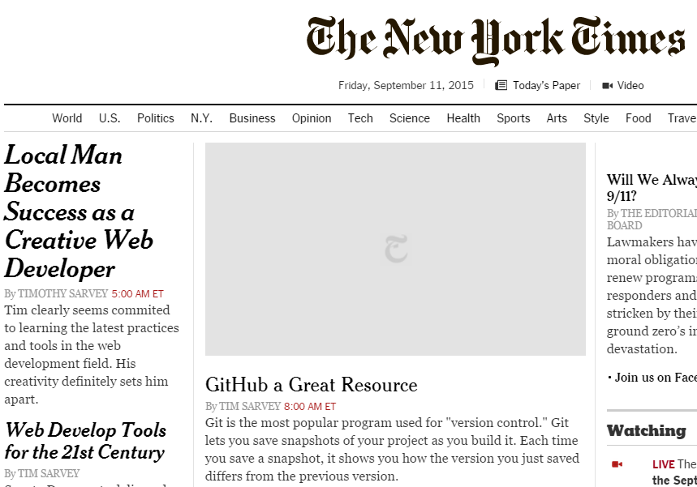
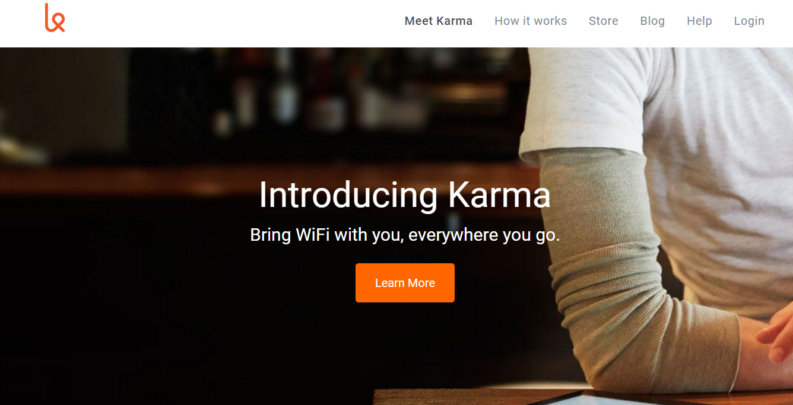
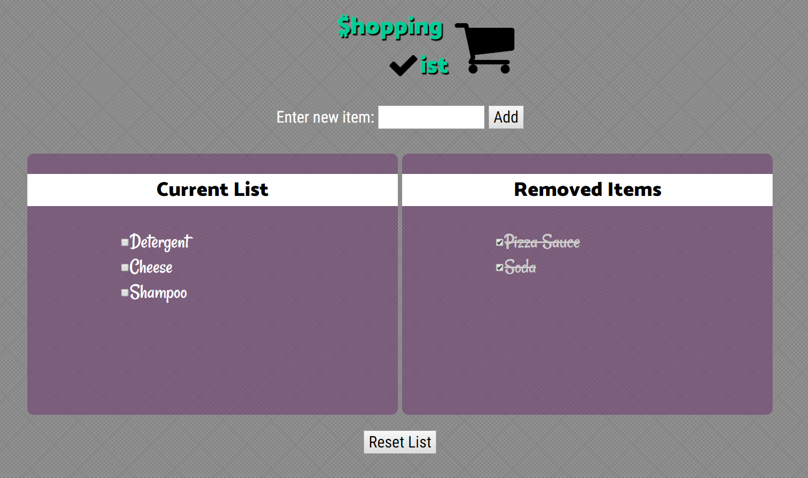

Hi, I'm
I am a Front End Web Developer with a heart for good design and style. I love working with HTML5, CSS3, and Javascript to create websites that have great curb appeal.
I am currently enrolled at UMass Lowell, finishing an Undergradate Degree in Information Technology. To take my knowledge to another level, I have enrolled at Thinkful to learn about and use tools/resources that are cutting edge in my field.
I live in a small town called Huntingdon, located in Pennsylvania. Growing up in blue-collar towns, I know what it means to put your nose to the grindstone.
What are your favoirte hobbies?
Growing up in Western PA, I enjoy watching the Pittsburgh Steelers on Sundays. I also love spending time with my family, including my twin brother.
What is your dream job?
My ultimate dream is to be able to work from wherever I want and on my own hours. I have never had problems with self-motivation and find I can be more productive without the hustle and bustle of a corporate office.
What is your background?
I have a strong background in music, having a Bachelor's Degree in Music Ed and a Master's in Music Technology. It was during my Master's program that I discovered my love for web development and for programming.
What music have you been listening to lately?
Being a former music teacher, I listen to a variety of music including classical, showtunes, 80's Rock, Punk, and have a particular love for John William's movie scores.
Using Chrome Developer Tools
Hacking the New York Times In this project, I manipulate the New York Times website DOM using Chrome Developer Toos to change headlines and css.
Cloning a Landing Page From Scratch
Cloning Karma I created a clone of a website from scratch. Check out my progression on GitHub and the final product. You can also view the original Karma website to compare.
jQuery Events
Street Fighter This projct showcases my abilities to manipulate the DOM using jQuery. Find the fully working project here, or check out the steps I took at GitHub.
Shopping List I created this shopping list app to further showcase my abilites to manipulate the DOM. You can add and check off items, and reset the list. Here is the working Shopping List App and here is the GitHub.
